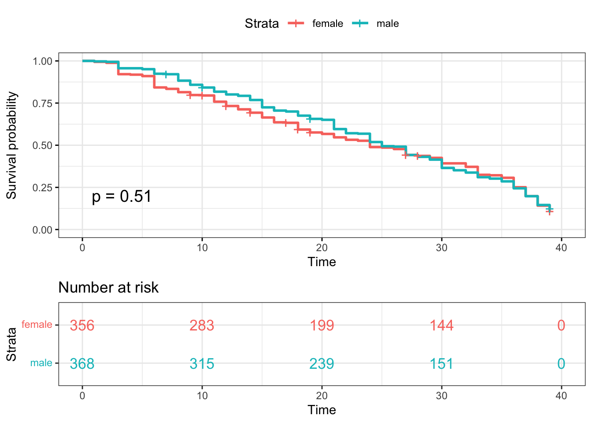
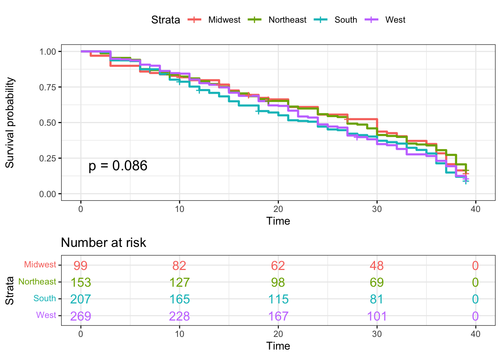
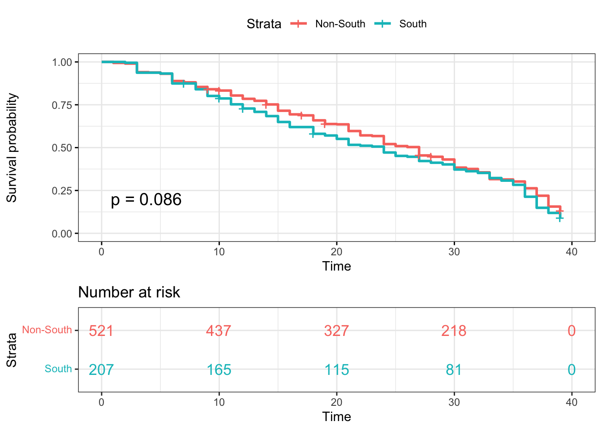
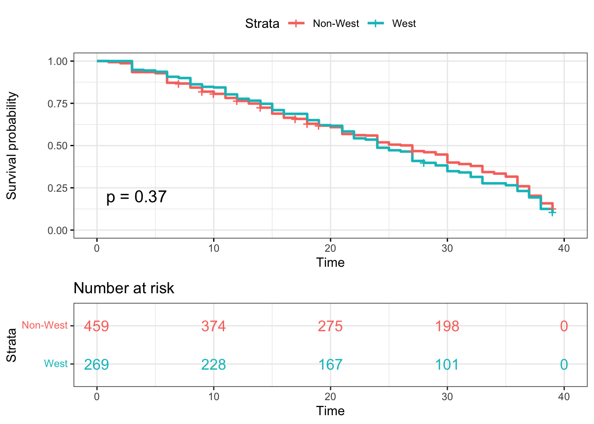

For our project, we are interested in using Survival Analysis. Suppose that there is a true survival time, T, as well as a true censoring time, C. The survival time represents the time at which the event of interest occurs: in this dataset, the time (in days) at which a participant is voted out. The censoring time is the time at which a participant drops out of the game show or survived until the last day of the show.
We observed the Survival Time T and Censoring Time C. Suppose there is a random variable Y
\[Y = min(T,C)\]
In other words, if the event occurs before the censoring such that T \(<\) C, then we observed the true survival time T. If censoring occurs before the event such as T \(>\) C, then we observe the censoring time. The status indicator as,
\[\delta = \left\{ \begin{array}{ll} 1 & T\leq C \\ 0 & T > C \\ \end{array} \right. \]
Thus, \(\delta\) = 1 if we observe the true survival time, and \(\delta\) = 0 if we observe the censoring.
We use the Cox-propositional hazard model to evaluate the effect of several factors on survival time in Survivor. It allows us to examine how specified factors influence the rate of the event that we are interested in at a particular point in time. This rate is the hazard rate. Covariates are age, gender, poc, personality type, and region in this model. The Cox model is expressed by the hazard function denoted by h(t). Briefly, the hazard function can be interpreted as the risk of voted out at time t. It can be estimated as follows: \[h(t) = h_0(t)\exp(x_1\beta_1 + x_2\beta_2 + x_3\beta_3 + x_4\beta_4 + x_4\beta_5)\] where,
Connection with the Log-Rank Test
Suppose we have a single predictor \((p=1)\), which we assume to be binary. We aim to determine whether there is a difference between the survival times of the observations in the group. For instance, we consider a test to compare difference survival times between females and males. The null hypothesis is that the two groups have identical hazard functions: \[H_0: h_1(t) = h_2(t)\]
## reading in data
survivor_data_final =
read.csv("data/survivor_data_final.csv")
## Create status and time variable
# filtering of seasons moved to data wrangling file
# replaced all survivor_final with survivor_data_final since filtering was moved to use for EDA
status <- c()
time <- c()
for (i in 1:nrow(survivor_data_final))
{
if (survivor_data_final[i,17] == "Quit") {
status[i] <- 0
time[i] <- survivor_data_final$days_survived[i]
}
else if (survivor_data_final[i,17] == "Sole Survivor") {
status[i] <- 0
time[i] <- survivor_data_final$days_survived[i]
}
else if (survivor_data_final[i,17] == "Runner-up") {
status[i] <- 0
time[i] <- survivor_data_final$days_survived[i]
} else if (survivor_data_final[i,17] == "Co-runner-up") {
status[i] <- 0
time[i] <- survivor_data_final$days_survived[i]
}
else {
status[i] <- 1
time[i] <- survivor_data_final$days_survived[i]
}
}
survivor_data_final[,25] <- status
survivor_data_final[,26] <- time
colnames(survivor_data_final)[25] <- "status"
colnames(survivor_data_final)[26] <- "time"
surv_model_cox1 <- coxph(data = survivor_data_final,
Surv(time, status) ~ age_during_show + gender + poc + personality_type_binary + region)
# summary(surv_model_cox1)
# Clean table for Cox PH
tabcoxph(surv_model_cox1,
var.labels = list(age_during_show = "Age", gender = "Gender", poc = "POC", personality_type_binary = "Personality Type", region = "Region"),
decimals = 2)| Variable | Beta (SE) | HR (95% CI) | P |
|---|---|---|---|
| Age | -0.00 (0.00) | 1.00 (0.99, 1.01) | 0.95 |
| Gender | |||
| Female (ref) | – | – | – |
| Male | -0.05 (0.08) | 0.95 (0.81, 1.11) | 0.50 |
| POC | |||
| POC (ref) | – | – | – |
| White | -0.11 (0.09) | 0.89 (0.75, 1.07) | 0.21 |
| Personality Type | |||
| Extrovert (ref) | – | – | – |
| Introvert | 0.07 (0.08) | 1.07 (0.91, 1.25) | 0.42 |
| Region | |||
| Midwest (ref) | – | – | – |
| Northeast | -0.00 (0.15) | 1.00 (0.75, 1.33) | 0.99 |
| South | 0.26 (0.14) | 1.30 (1.00, 1.70) | 0.05 |
| West | 0.17 (0.13) | 1.18 (0.91, 1.53) | 0.20 |
As age increases in years, there is no difference in survival since the hazard ratio is 1. We are 95% confident that the HR falls between 0.9922 to 1.008. However, the HR is not statistically significant since the p-value of 0.998 > 0.05.
For the gender variable, the HR value of 0.96 would suggest that the survival time for Male contestants compared to Female contestants (the reference category) is longer. We are 95% confident that the HR falls between 0.82 and 1.12. However, the HR is not statistically significant since the p-value of 0.57 > 0.05.
For the POC variable, the HR value of 0.8881 would suggest that the survival time for White contestants compared to POC contestants (the reference category) is longer. We are 95% confident that the HR falls between 0.7456 and 1.058. However, the HR is not statistically significant since the p-value of 0.184 > 0.05.
For personality type, the HR value of 1.0631 would suggest that the survival time for Introvert contestants compared to Extrovert contestants (the reference category) is shorter. We are 95% confident that the HR falls between 0.9076 - 1.245. However, the HR is not statistically significant since the p-value of 0.448 > 0.05.
For region, Midwest is the reference category. However, all of these hazard ratios are not statistically significant, p-value > 0.05.
We use Kaplan-Meier Curves to estimate the survival function for
contestants. We apply the ggsurvplot function to draw the
survival curves and calculate log-rank test p-value. The following plots
are the estimated probability of survival for contestants in each group.
Based on the log rank test results, most of the log-rank test p-values
are not statistically significant at \(\alpha=0.05\). While we perform the
log-rank test for contestants from Northeast and non-Northeast regions,
the p-value = 0.049, which implies there is significant difference
between Northeast and non-Northeast contestants.
surv_model_per <- survfit(Surv(time, status)~ survivor_data_final$personality_type_binary)
ggsurvplot(
surv_model_per,
data = survivor_data_final,
size = 1, # change line size
palette =
c("#E7B800", "#2E9FDF"),# custom color palettes
conf.int = FALSE, # Add confidence interval
pval = TRUE, # Add p-value show log-rank test
risk.table = TRUE, # Add risk table
risk.table.col = "strata",# Risk table color by groups
legend.labs =
c("Extrovert", "Introvert"), # Change legend labels
risk.table.height = 0.35, # Useful to change when you have multiple groups
ggtheme = theme_bw() # Change ggplot2 theme
)#basic graph
# plot(surv_model_per, xlab = "Days",
# ylab = "Estimated Probability of Survival", col = c(2,4))surv_model_poc <- survfit(Surv(time, status)~ survivor_data_final$poc)
ggsurvplot(
surv_model_poc,
data = survivor_data_final,
size = 1, # change line size
conf.int = FALSE, # Add confidence interval
pval = TRUE, # Add p-value
risk.table = TRUE, # Add risk table
risk.table.col = "strata",# Risk table color by groups
legend.labs =
c("POC", "White"), # Change legend labels
risk.table.height = 0.35, # Useful to change when you have multiple groups
ggtheme = theme_bw() # Change ggplot2 theme
)surv_model_sex <- survfit(Surv(time, status)~ survivor_data_final$gender)
ggsurvplot(
surv_model_sex,
data = survivor_data_final,
size = 1, # change line size
conf.int = FALSE, # Add confidence interval
pval = TRUE, # Add p-value
risk.table = TRUE, # Add risk table
risk.table.col = "strata",# Risk table color by groups
legend.labs =
c("female", "male"), # Change legend labels
risk.table.height = 0.35, # Useful to change when you have multiple groups
ggtheme = theme_bw() # Change ggplot2 theme
)
surv_model_Region <- survfit(Surv(time, status)~ survivor_data_final$region)
ggsurvplot(
surv_model_Region,
data = survivor_data_final,
size = 1, # change line size
conf.int = FALSE, # Add confidence interval
pval = TRUE, # Add p-value
risk.table = TRUE, # Add risk table
risk.table.col = "strata",# Risk table color by groups
legend.labs =
c("Midwest", "Northeast", "South", "West"), # Change legend labels
risk.table.height = 0.5, # Useful to change when you have multiple groups
ggtheme = theme_bw() # Change ggplot2 theme
)
surv_model_NE <- survfit(Surv(time, status)~ survivor_data_final$NE)
ggsurvplot(
surv_model_NE,
data = survivor_data_final,
size = 1, # change line size
conf.int = FALSE, # Add confidence interval
pval = TRUE, # Add p-value
risk.table = TRUE, # Add risk table
risk.table.col = "strata",# Risk table color by groups
legend.labs =
c("Non-Northeast", "Northeast"), # Change legend labels
risk.table.height = 0.35, # Useful to change when you have multiple groups
ggtheme = theme_bw() # Change ggplot2 theme
)surv_model_South <- survfit(Surv(time, status)~ survivor_data_final$South)
ggsurvplot(
surv_model_South,
data = survivor_data_final,
size = 1, # change line size
conf.int = FALSE, # Add confidence interval
pval = TRUE, # Add p-value
risk.table = TRUE, # Add risk table
risk.table.col = "strata",# Risk table color by groups
legend.labs =
c("Non-South", "South"), # Change legend labels
risk.table.height = 0.35, # Useful to change when you have multiple groups
ggtheme = theme_bw() # Change ggplot2 theme
)
surv_model_West <- survfit(Surv(time, status)~ survivor_data_final$West)
ggsurvplot(
surv_model_West,
data = survivor_data_final,
size = 1, # change line size
conf.int = FALSE, # Add confidence interval
pval = TRUE, # Add p-value
risk.table = TRUE, # Add risk table
risk.table.col = "strata",# Risk table color by groups
legend.labs =
c("Non-West", "West"), # Change legend labels
risk.table.height = 0.35, # Useful to change when you have multiple groups
ggtheme = theme_bw() # Change ggplot2 theme
)
surv_model_Midwest <- survfit(Surv(time, status)~ survivor_data_final$Midwest)
ggsurvplot(
surv_model_Midwest,
data = survivor_data_final,
size = 1, # change line size
conf.int = FALSE, # Add confidence interval
pval = TRUE, # Add p-value
risk.table = TRUE, # Add risk table
risk.table.col = "strata",# Risk table color by groups
legend.labs =
c("Non-Midwest", "Midwest"), # Change legend labels
risk.table.height = 0.35, # Useful to change when you have multiple groups
ggtheme = theme_bw() # Change ggplot2 theme
)